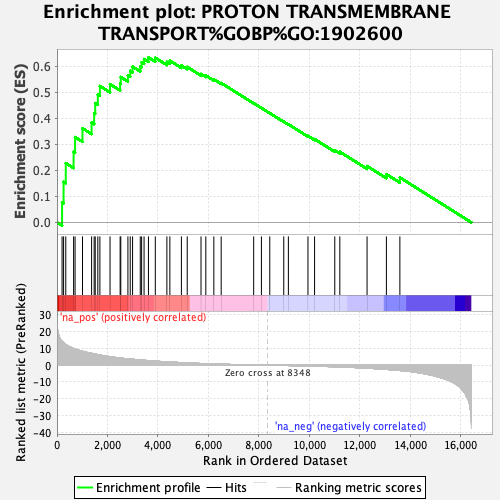
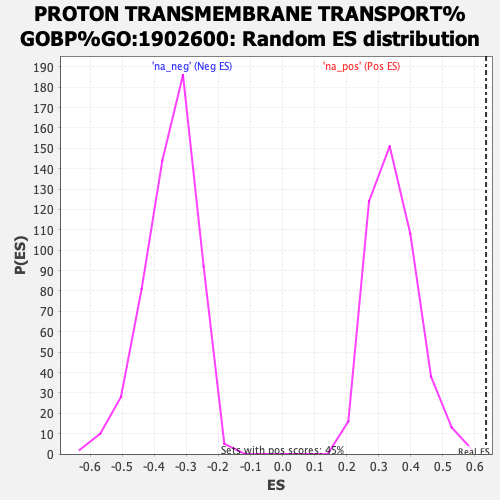

| Dataset | ranked_gene_list |
| Phenotype | NoPhenotypeAvailable |
| Upregulated in class | na_pos |
| GeneSet | PROTON TRANSMEMBRANE TRANSPORT%GOBP%GO:1902600 |
| Enrichment Score (ES) | 0.6348604 |
| Normalized Enrichment Score (NES) | 1.8402532 |
| Nominal p-value | 0.0 |
| FDR q-value | 0.076525465 |
| FWER p-Value | 0.666 |

| SYMBOL | RANK IN GENE LIST | RANK METRIC SCORE | RUNNING ES | CORE ENRICHMENT | |
|---|---|---|---|---|---|
| 1 | MT-ND4 | 201 | 14.208 | 0.0766 | Yes |
| 2 | ATP6V0B | 261 | 13.274 | 0.1560 | Yes |
| 3 | UCP2 | 348 | 12.339 | 0.2280 | Yes |
| 4 | ATP6V0E2 | 658 | 9.937 | 0.2713 | Yes |
| 5 | ATP6AP1 | 716 | 9.646 | 0.3281 | Yes |
| 6 | MT-ATP6 | 1010 | 8.282 | 0.3621 | Yes |
| 7 | SLC4A11 | 1371 | 7.051 | 0.3842 | Yes |
| 8 | TCIRG1 | 1472 | 6.739 | 0.4202 | Yes |
| 9 | ATP5MC1 | 1514 | 6.597 | 0.4590 | Yes |
| 10 | UCP3 | 1617 | 6.276 | 0.4920 | Yes |
| 11 | NDUFS7 | 1699 | 6.040 | 0.5249 | Yes |
| 12 | SLC7A11 | 2101 | 5.047 | 0.5319 | Yes |
| 13 | SLC46A1 | 2501 | 4.288 | 0.5344 | Yes |
| 14 | ATP6AP2 | 2527 | 4.248 | 0.5595 | Yes |
| 15 | ATP5F1B | 2809 | 3.769 | 0.5659 | Yes |
| 16 | ATP6V1G2 | 2901 | 3.629 | 0.5830 | Yes |
| 17 | NOX5 | 2994 | 3.524 | 0.5994 | Yes |
| 18 | ATP6V1F | 3298 | 3.095 | 0.6003 | Yes |
| 19 | ATP6V0A2 | 3352 | 3.026 | 0.6160 | Yes |
| 20 | ATP6V0E1 | 3449 | 2.928 | 0.6284 | Yes |
| 21 | TMEM175 | 3623 | 2.716 | 0.6349 | Yes |
| 22 | ATP1A1 | 3894 | 2.408 | 0.6334 | No |
| 23 | SLC9A8 | 4353 | 1.959 | 0.6177 | No |
| 24 | ATP6V1E1 | 4471 | 1.871 | 0.6223 | No |
| 25 | SLC9A1 | 4928 | 1.506 | 0.6038 | No |
| 26 | ATP6V1B2 | 5159 | 1.343 | 0.5982 | No |
| 27 | DMAC2L | 5705 | 0.997 | 0.5711 | No |
| 28 | ATP6V0A4 | 5895 | 0.897 | 0.5652 | No |
| 29 | SLC36A1 | 6213 | 0.737 | 0.5504 | No |
| 30 | ATP6V1H | 6504 | 0.593 | 0.5364 | No |
| 31 | MT-ND5 | 7791 | 0.124 | 0.4587 | No |
| 32 | ATP6V1D | 8098 | 0.051 | 0.4403 | No |
| 33 | ATP1A4 | 8429 | -0.016 | 0.4202 | No |
| 34 | ATP6V0D1 | 8983 | -0.146 | 0.3874 | No |
| 35 | ATP1A2 | 9166 | -0.199 | 0.3775 | No |
| 36 | ATP6V0A1 | 9942 | -0.451 | 0.3330 | No |
| 37 | HVCN1 | 10204 | -0.551 | 0.3205 | No |
| 38 | ATP6V1G1 | 11004 | -0.920 | 0.2774 | No |
| 39 | ATP6V1C1 | 11204 | -1.017 | 0.2716 | No |
| 40 | ATP6V1A | 12283 | -1.757 | 0.2168 | No |
| 41 | NNT | 13049 | -2.483 | 0.1856 | No |
| 42 | ATP1B1 | 13583 | -3.159 | 0.1728 | No |
